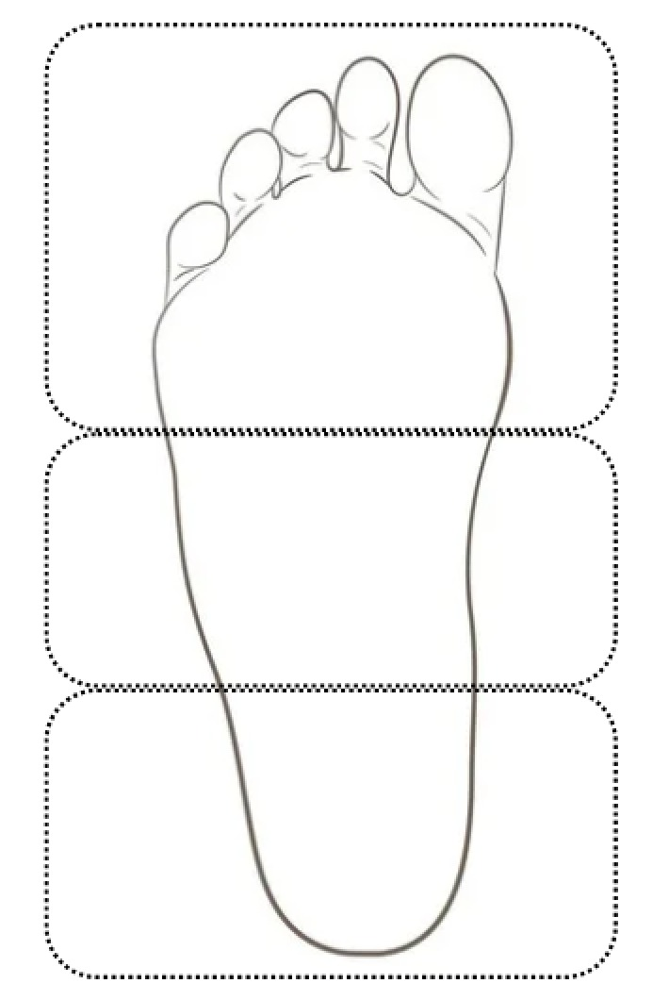

SmartStep — Clasificación de Pisada
Diagnóstico Detectado
Pie Plano
Confianza: 95.8%
Test Normal
Test Plano
Test Cavo
Muestreo en Vivo
Distribución de Carga
Zona Biomecánica
Carga
Sección Alta (Metatarsos y Hallux)
40 %
Sección Media (Bóveda / Arco Medial)
35 %
Sección Baja (Retropié / Talón)
25 %

Baja
Alta